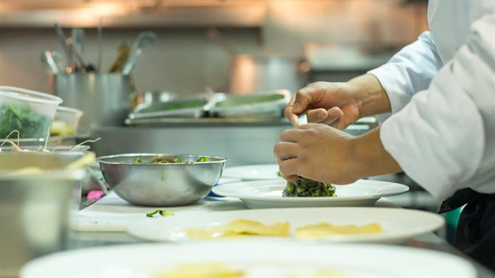
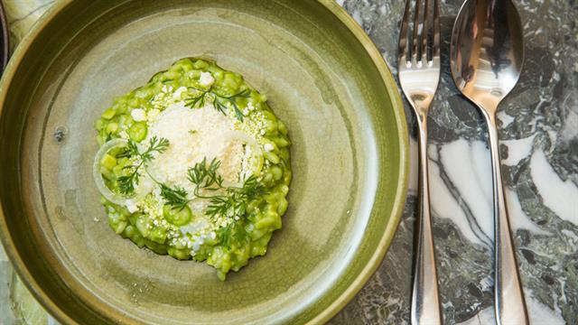

Lo mejor de la comida - online
23 de septiembre de 2017
Nada como las costumbres a la hora de comer y los rituales de la mesa, los mercados y sus productos, las recetas, los hábitos de consumo y de disfrute para describir la fisonomía de un pueblo. No es lo mismo la mesa mexicana que la italiana, la francesa, la peruana o la argentina. En cada una de ellas se pueden rastrear historias, paisajes, estilos, riqueza cultural. Las cocinas con identidad, que moldean el lugar que habitan, son las que más perduran y las que mayor atracción despiertan. "La hegemonía culinaria de Oaxaca -paraíso gastronómico de México- se explica porque sus habitantes comen oaxaqueño", sentenció el chef Alejandro Ruiz (restaurante Casa Oaxaca). Allí, la cocina está en el campo, en la calle, en los mercados, en la memoria, en el día a día. Viva.
Publicar01 de octubre de 2017
En muchos casos, el camino de los profesionales gastronómicos no se trata sólo de fama y dinero. Hay infinidad de chefs preocupados por hacer un mundo mejor a través de la comida, como Gastromotiva -Brasil- una propuesta que ofrece desde programas educacionales de cocina para jóvenes hasta planes que valoran la cultura brasileña con el objetivo de incentivarles a las personas a comprar productos de fuentes locales. Hoy, los colectivos gastronómicos, donde la cocina se concibe como una herramienta social y se trabaja en forma interdisciplinaria con periodistas, antropólogos, sociólogos y biólogos es una iniciativa cada vez más frecuente. Ejemplos: Orígenes, liderado por Jorge Vallejo (México), Mauro Colagreco (Argentina) y Virgilio Martínez (Perú). O el Colectivo Mexicano de Cocina, con Daniel Olvera a la cabeza. La tarea que realiza el instituto Atá, llevado adelante por el brasileño Alex Atala. O COMILONA, un proyecto de cocina nómada argentina liderada por Diego Jacquet que intenta llevar la bandera de la gastronomía nacional por el planeta.
Publicar